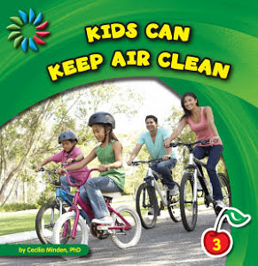

<ion-header>
  <ion-toolbar>
    <ion-buttons slot="start">
      <ion-back-button></ion-back-button>
    </ion-buttons>
    <ion-title>
      <p>Kids Can Recycle</p></ion-title>
  </ion-toolbar>
</ion-header>

<ion-content>
  <ion-card>
    
    <ion-card-content>
      <div class='detail-title'>
        {{data.get('series_name')}}
      </div>
      <div class='detail-price'>
        PRICE : {{data.get('actual_price')}}
      </div>
        <ul class="ul-style">
          <li>Age : 3 and up</li>
          <li> Series: Language Arts Explorer: Habits and Essentials</li>
          <li> No pf Pages: 24 pages</li>
          <li> Publisher: Aries Books International. (January 1 2019)</li>
          <li> Author: Cecilia Minden</li>
          <li>  Language: English</li>
          <li> Copyright: 2019</li>
          <li> Graphics: Full Color Photographs</li>

        </ul>
        <!-- <button>Login & Add to cart</button> -->
        <div class="ion-text-center">
          <ion-button class="buttonClass">Login & Add to cart</ion-button>
        </div>
        
        <div class="detail-price description">
          Description
        </div>
        <div class="ion-text-justify">Level 3 guided reader that helps teach students the importance of keeping water clean and gives practical ideas on things they can do to pitch in.</div>
    </ion-card-content>
    
  </ion-card>
  <!-- <ion-fab left bottom>
    <button ion-fab class="fab"><ion-icon name="arrow-dropleft"></ion-icon></button>
  </ion-fab> -->
</ion-content>
